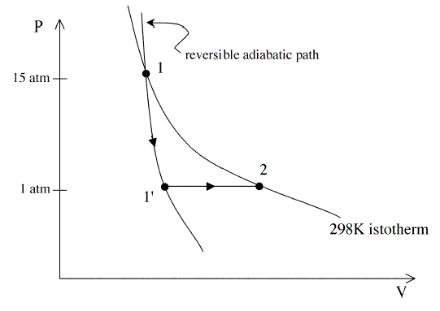

Sage of the Arctic
Men at Work
The bellowsmaker is trying to sell a pricier model than Jeremiah came in for, arguing that it will require less work, so one can save oneself for more pick-axing and panning. The bellows takes in one m3of diatomic ideal gas which is first expanded from an initial state at 298K and 15atm pressure to a final state at 1 atm. During this expansion the gas is thermally insulated from the environment. After this expansion, the insulation is removed and the gas is allowed to cool (or heat) back to 298K, while keeping the pressure constant at 1atm. What is the amount of work done by the gas in the first step?
